1. 什么是GitHub dev
github.dev 编辑器引入了完全在浏览器中运行的轻量级编辑体验。 使用 github.dev 编辑器，可以从 GitHub 中导航文件和源代码存储库，并创建和提交代码更改。 您可以在编辑器中打开任何存储库、复刻或拉取请求。
简单点说，就是可以直接在浏览器上编辑代码，不用再下载到本地了。并且可以直接跳过配置繁琐的ssh key，直接在线进行GitHub远端库的更新
关于github.dev的更多信息，请参阅GitHub.dev。
2. 如何使用github.dev
本篇教程更加注重实际，故采用了一个简单的例子来进行讲解。此例子针对初到社区并且没有创建自己的分支的成员。如果已经创建过分支，可以直接跳到2.4。
2.1 登录到自己的GitHub账户，并切换到组织账户
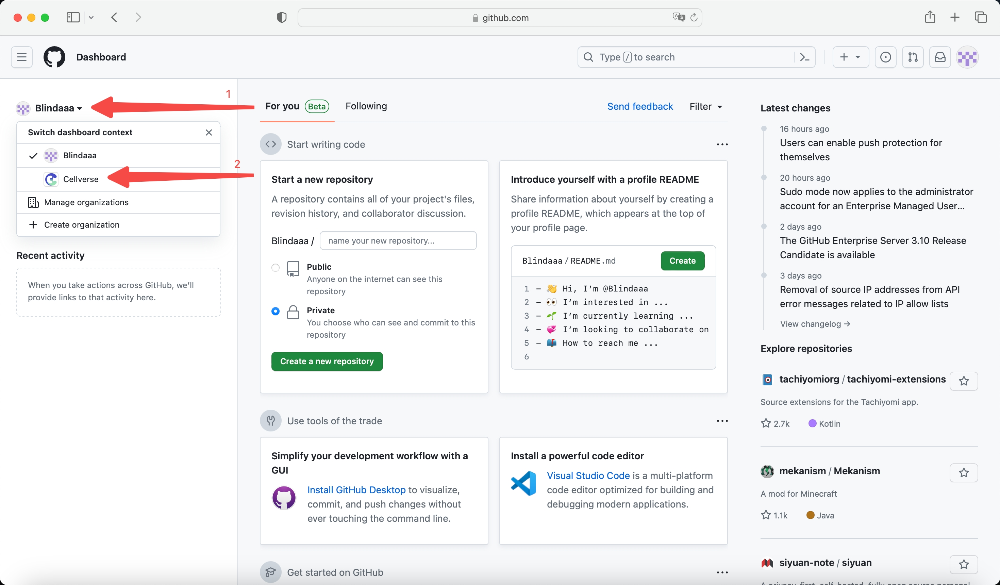
- 登陆到GitHub账户后，点击左上角头像
- 点击
Cellverse组织账户，进入组织账户页面
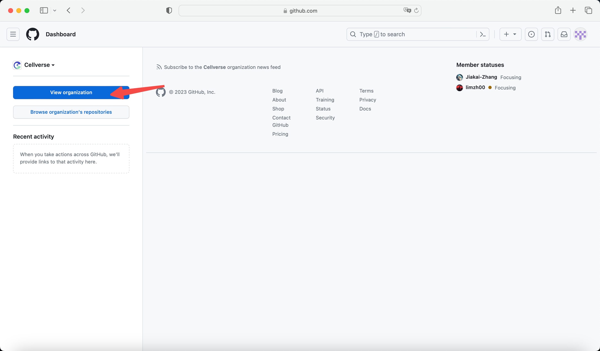
点击View organization查看组织项目。
2.2 进入组织项目Open-EM
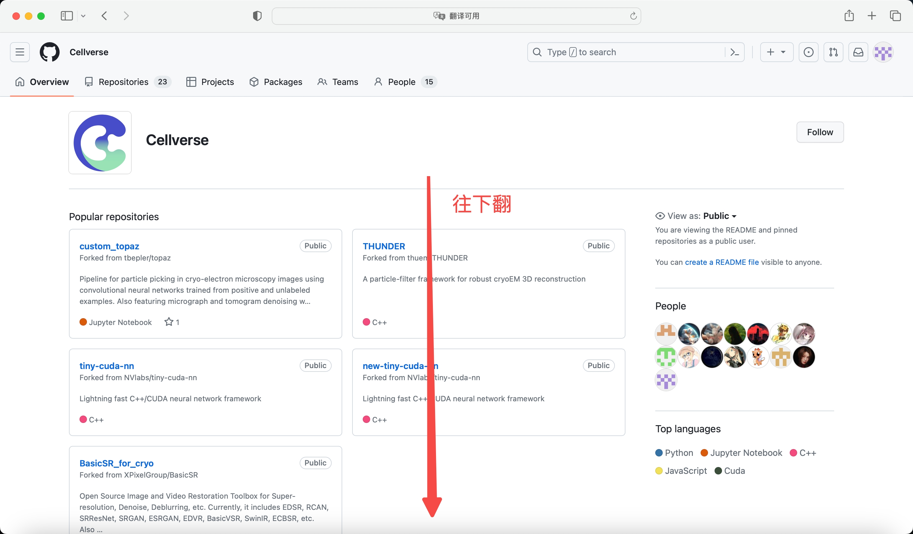 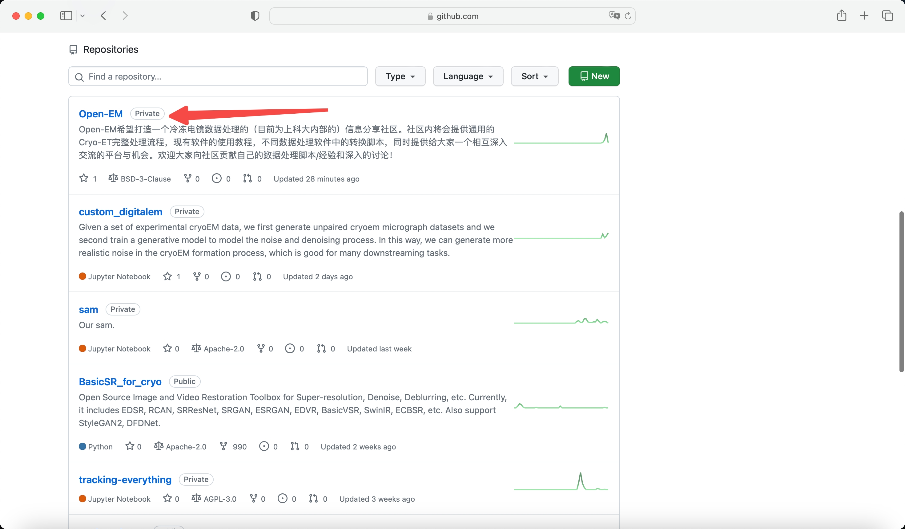
进入到组织详情页后，你将会看到如上图的页面，向下翻，找到Open-EM项目，点击进入。
2.3 创建并进入到自己的分支
2.3.1 创建分支
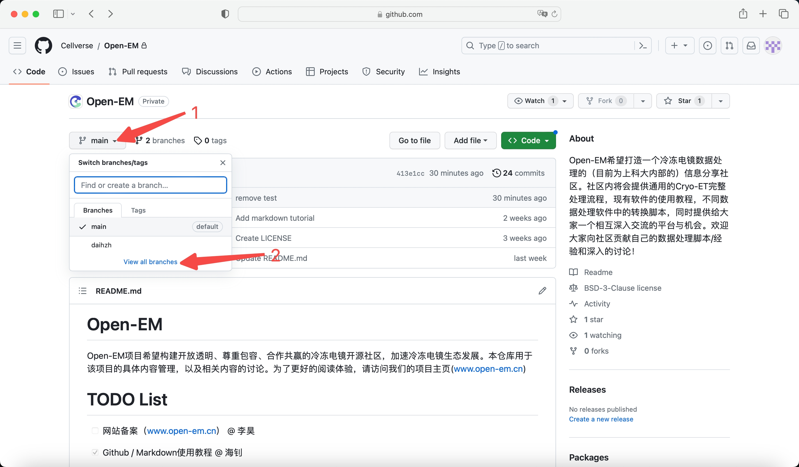 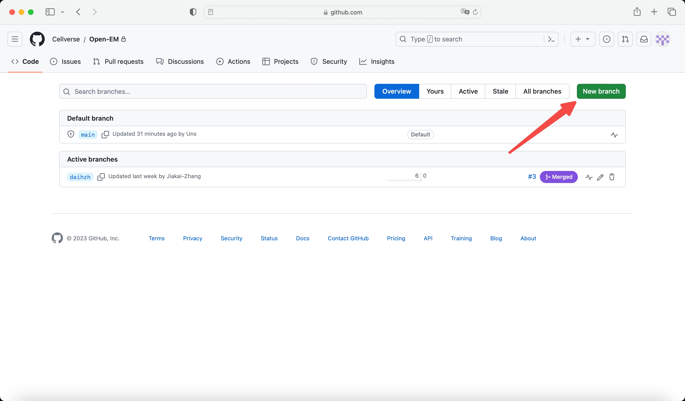 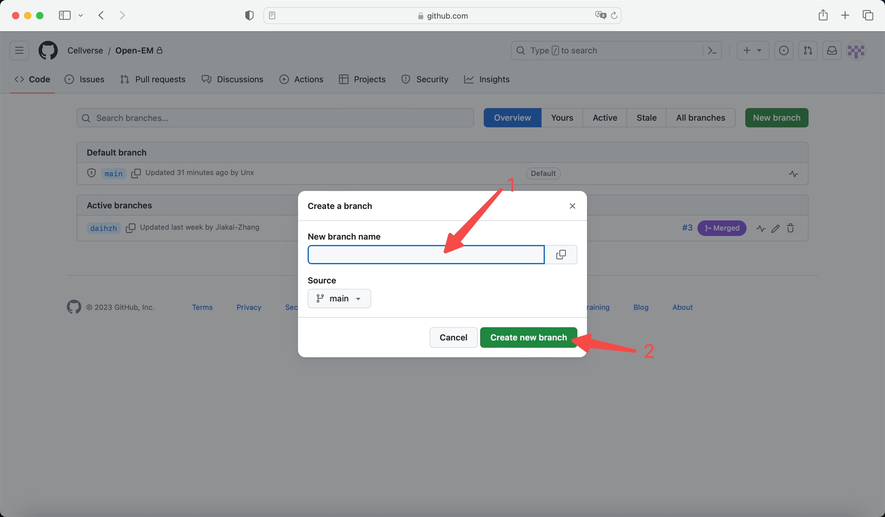
如上图，按照顺序点击到第三张图片后，在New branch name中输入自己的分支名。（推荐以自己姓的全拼+名的首字母，例如张三可以将自己的分支名取为zhangs，王麻子可以取为wangmz），随后点击Create new branch即可。
2.3.2 进入分支
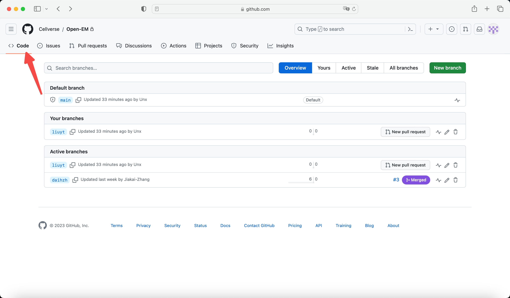 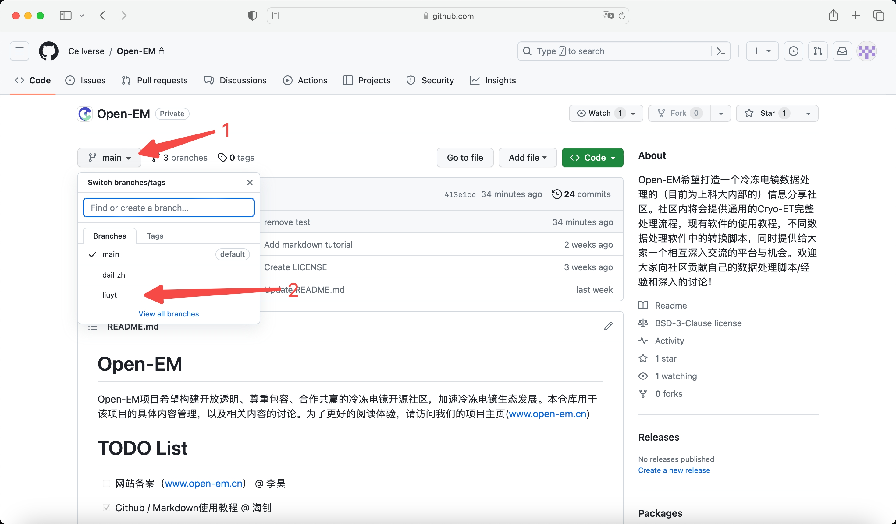
图一点击code返回项目主页，图二按照图示切换分支。注意，此处需要点击的分支是2.3.2步自己命名的New branch name。
2.4 进入GitHub dev（或者叫GitHub CodeSpace）
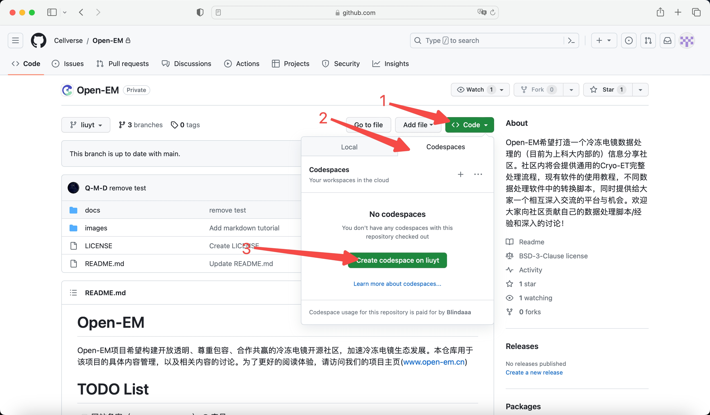 如图，按顺序点击即可。
2.5 GitHub dev的运用
在此处基本和在本地用vscode对一个文档操作无异。下面演示一个在doc文件夹下添加一个名为test.md的文档并更新到GitHub库中的示例。
2.5.1 添加文档
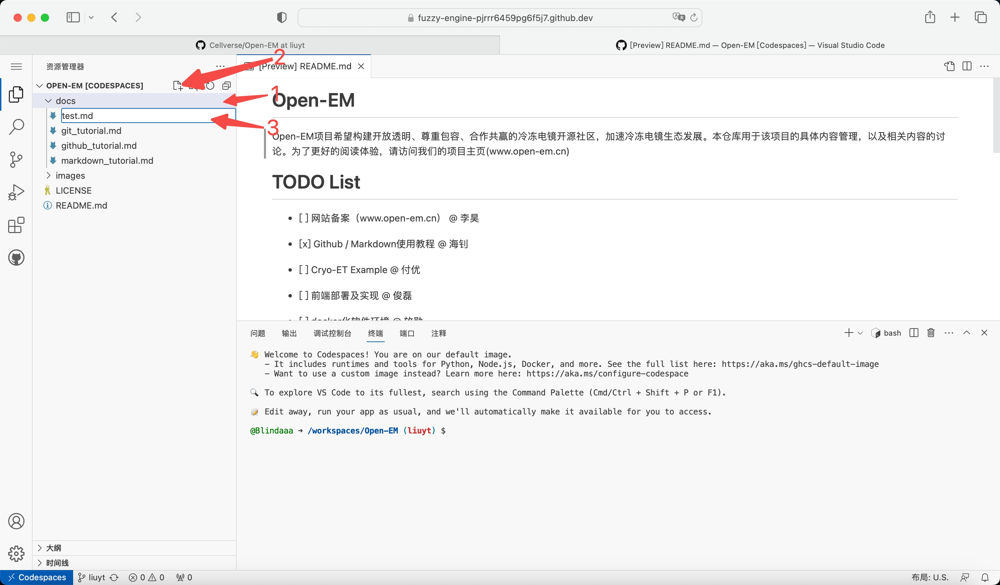
- 点击
doc文件夹 - 点击添加文件的按钮
- 输入
test.md文件名
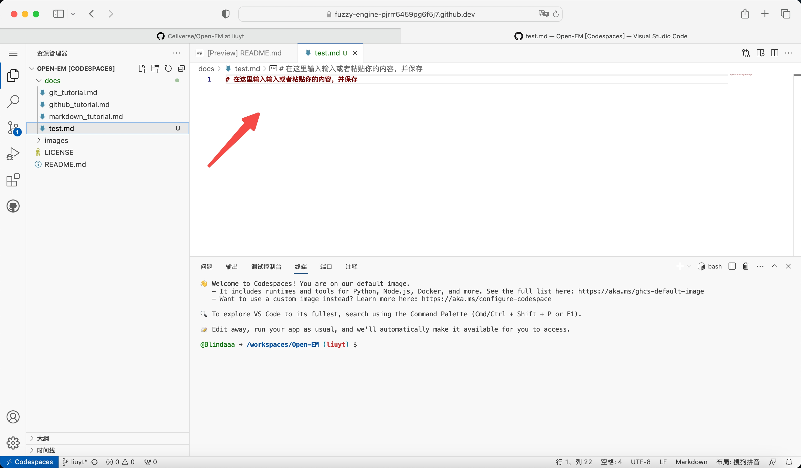
打开test.md文档后修改文档内容，此处可以选在在线编辑，也可以将在本地更改好的文件复制粘贴到该处。
2.5.2 提交同步文档
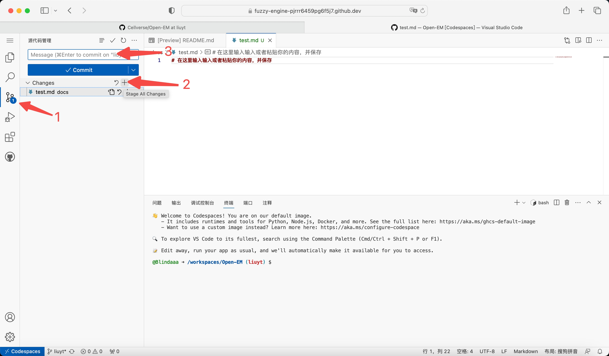
- 点击切换到更改管理
- 添加所有的更改到暂存区
- 为本次的修改命名。（例如本次我们添加了一个名为
test.md的文档，我们可以将此次的修改命名为add test.md）
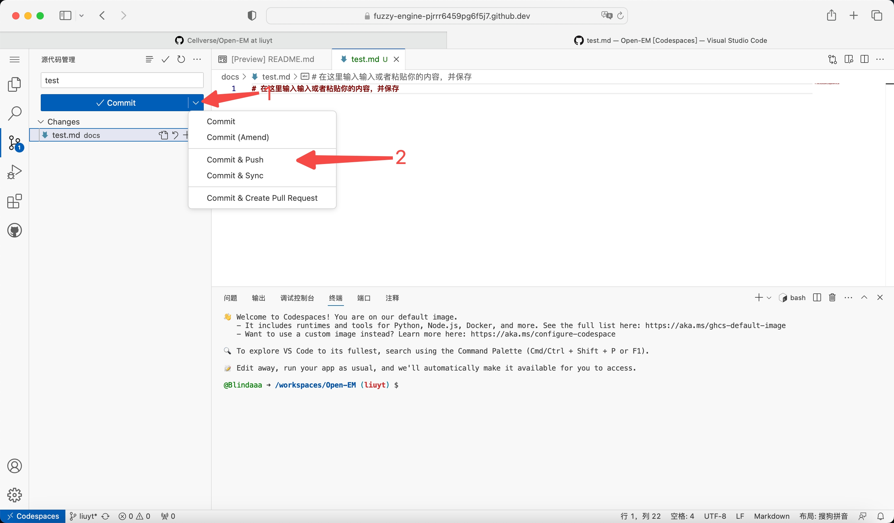
按照图示提交本次修改，修改将同步到你创建的GitHub分支上。
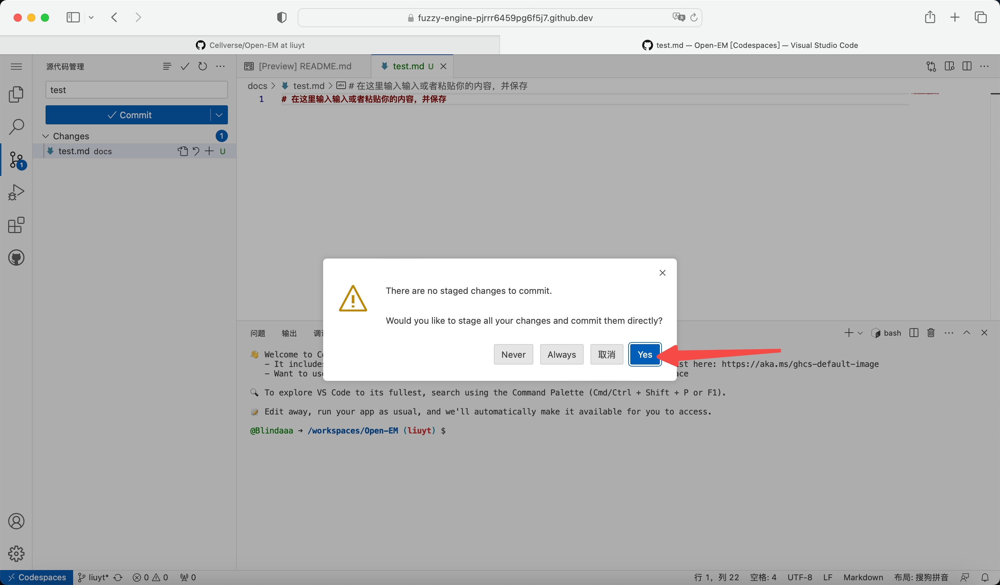
如果出现此警告，直接点击Yes即可。